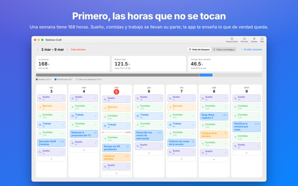
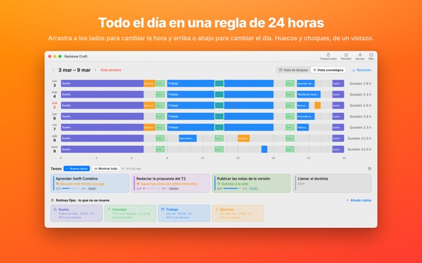
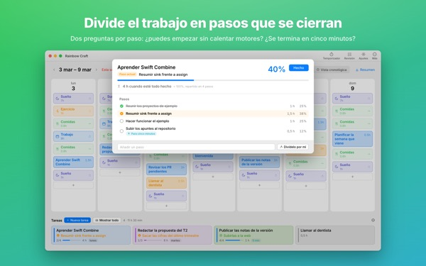
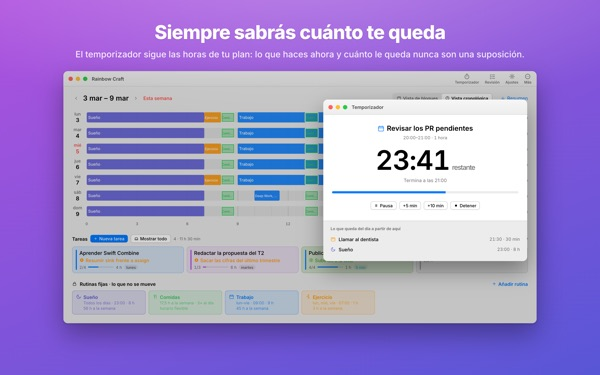
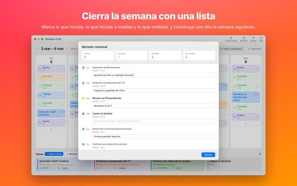

¿De verdad cabe todo
en esta semana?
Rainbow Craft despliega tu semana por días y horas en el Mac. Empieza por el tiempo que no puedes ceder, como dormir, comer y trabajar, arrastra tus tareas a los huecos que quedan y comprueba qué cabe de verdad.
Planificación, rutinas, tareas, revisión, temporizador e importación del calendario son gratis.

Planifica una semana aquí mismo
Hemos puesto las cuatro rutinas que la app sugiere al abrirla por primera vez. Actívalas y desactívalas, y coloca tareas en los días.
La lista no deja de crecer. La semana, no.
Una lista de tareas no te dice si tu semana puede con ella. Cuando el sueño, las comidas y los trayectos se llevan su parte, queda menos de lo que crees. Rainbow Craft te muestra esas horas en números y casillas, y te deja probar cada tarea en un hueco real.
Ve un día en una regla de 24 horas
La vista cronológica despliega el día sobre una regla de 24 horas. Los huecos y los solapamientos saltan a la vista, y tú decides cómo se colocan las citas que se pisan.
Trae reuniones y citas del Calendario del Mac sin escribirlas dos veces. Si quieres, tus planes también pueden ir a un calendario aparte de Rainbow Craft que verás en el iPhone. Tus otros calendarios no se tocan.

Divide lo grande en pasos que se terminan
Las tareas grandes se atascan cuando algo sigue en medio. La app pregunta dos cosas de cada paso: ¿puedes empezar sin calentar? ¿Lo acabas en cinco minutos?
Lo que cumple ambas es un fragmento para cualquier hueco de cinco minutos. Lo demás necesita tiempo reservado. Si la app se equivoca, decides tú.

Qué estás haciendo y cuánto te queda
A la hora de inicio, el plan pasa a en curso, y cuando se acaba el tiempo la app te pregunta si terminaste. El temporizador sigue tu horario.
El widget Temporizador actual muestra en qué estás y cuánto queda sin abrir la app.

Cierra la semana con una lista
La revisión semanal es una tarjeta por día. Marca lo que hiciste, lo que hiciste a medias y lo que saltaste, y úsalo para planificar la siguiente semana.
Con la misma cuenta de iCloud, las tareas pasan entre esta app y Rainbow of Desire en el iPhone, así que el día que planificaste en el Mac va contigo.

Empieza en tres pasos
- 1
Fija las horas que no se mueven
Lo que se repite cada semana, como dormir, comer y trabajar, va como rutina. La app no rellena nada por ti.
- 2
Apunta tus tareas
Una por línea en Tareas, abajo. Todavía no hace falta decidir cuándo.
- 3
Arrástralas a los días
Suéltala en un día y se convierte en un plan. ¿Cambia la fecha? Arrástrala a otro día o de vuelta a la lista.
Las cuentas con las rutinas sugeridas
- Una semana
- 168 horas
- Sueño · 8 horas al día
- 56 horas
- Comidas · tres al día
- 17,5 horas
- Trabajo · estudios · 9 horas entre semana
- 45 horas
- Ejercicio · 1 hora lun., mié. y vie.
- 3 horas
- Tiempo que de verdad tienes esta semana
- 46,5 horas
Son solo sugerencias. Elige y ajusta las rutinas a tu vida. Los días de vacaciones o de viaje, quita el trabajo solo de ese día.
Todo lo que necesitas para vivir esta semana es gratis
Gratis
- Planes de semana y de día, rutinas y tareas sin límite
- Vista cronológica y división en pasos
- Revisión semanal, también como texto para copiar
- Temporizador y widget Temporizador actual
- Importación del calendario
- Sincronización con Rainbow of Desire en el iPhone
- Tendencias de las últimas 2 semanas
Plus · Pro
- Plus: 8 semanas de tendencias, tus mejores días y horas
- Plus: plan frente a real
- Plus: copia de una vez el plan de una buena semana
- Pro: todo lo de Plus y compartir tu agenda con un enlace de solo lectura
- Pro: con una compra también se activa Pro en la app del iPhone
Cada nivel, en suscripción anual o compra única de por vida
Consulta los precios en la app o en el App Store. La suscripción anual se renueva sola si no la cancelas al menos 24 horas antes de que termine el periodo. Pro comprado en el iPhone también se activa en un Mac con la misma cuenta de iCloud.
Preguntas frecuentes
¿Tengo que iniciar sesión en iCloud?
No, si solo la usas en el Mac. Hace falta para sincronizar con el iPhone y para compartir tu agenda.
¿La app modifica mis calendarios?
Nunca cambia los calendarios que ya tienes. La importación solo lee los que eliges. Si activas escribir los planes en el calendario de Rainbow Craft, la app crea ese calendario aparte y solo escribe ahí. Puedes borrarlo en la app Calendario cuando quieras.
Las tareas del Mac no aparecen en el iPhone.
Comprueba que ambos dispositivos usan la misma cuenta de iCloud y que Rainbow of Desire está instalada en el iPhone. La sincronización pasa por iCloud y puede tardar unos minutos.
¿Cerrar la ventana cierra la app?
No. La app sigue abierta. Vuelve a abrir la ventana desde el menú Ventana o haciendo clic en el icono del Dock.
¿Qué pasa con mis tareas y planes al actualizar?
Se quedan tal cual. Las actualizaciones no cambian ni borran lo que escribiste.
¿Cómo cambio el idioma de la app?
Elígelo arriba del todo en Ajustes, en Language · 언어 · 語言, y la app se vuelve a abrir en ese idioma. Hay 23 idiomas. Los nombres de rutinas y las tareas que escribiste tú no se traducen.
Cambié de Mac y perdí Plus o Pro.
Inicia sesión con la misma cuenta de Apple y haz clic en Restaurar compra en Ajustes. Para cancelar, ve a los ajustes de tu cuenta en el App Store.
¿Dónde se guarda lo que escribo?
No hay cuenta, ni registro, ni servidor del desarrollador con tus planes. Lo que escribes se queda en tus dispositivos y en tu propio iCloud. La app envía estadísticas de uso anónimas que nunca incluyen lo que escribes, y puedes desactivarlas en Ajustes con Enviar estadísticas de uso anónimas.
¿Te has atascado o algo no va bien? Escribe a mizzking75@gmail.com. En los Ajustes de la app también tienes un apartado de contacto.